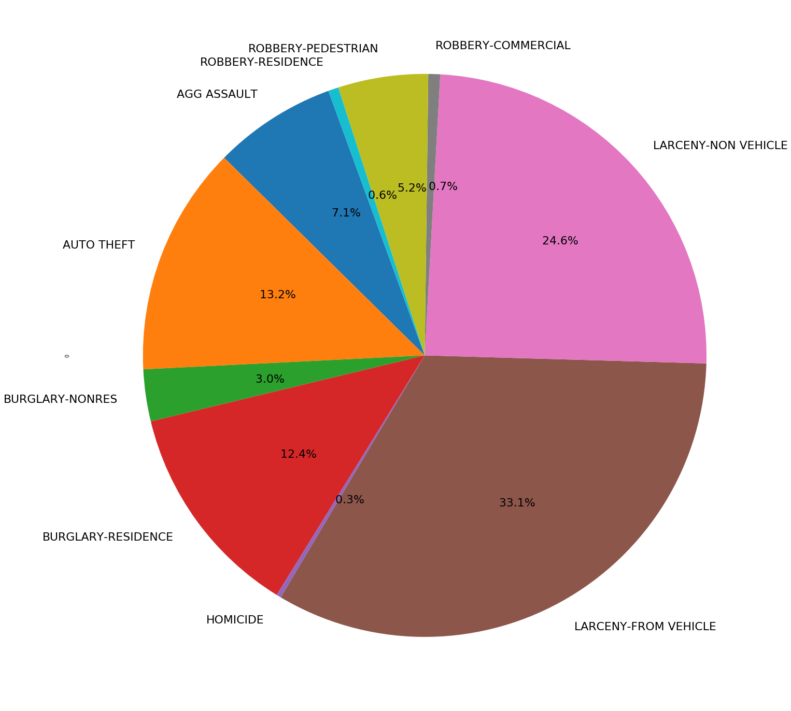

These are our findings:
- The most common type of crime is Larceny From Vehicle, the least common is Homicide.
- The neighborhood with the highest median income was Paces (third lowest per-capita crime
rate), the neighborhood with the highest crime per-capita was Westend.
- The lowest crime rate per-capita was Georgia Tech, the next lowest was Knight Park / Howel Station.
- The most crimes happened in June followed by July, February was the least.
- The most crimes occurred on Friday, the least on Sunday.
There is no liner relationship between income level and crimes per-capita in a given neighborhood.
The following are the results from our linear regression P value = 0.00014 R value = -0.52307 With
a P value < 0.05, we show that an increase in median income is correlated with a decrease in crimes
per-capita. Also, our R value shows that there is not a strong linear correlation between median
income level and crimes per-capita
These are our findings:
- The most common type of crime is Larceny From Vehicle, the least common is Homicide.
- The neighborhood with the highest median income was Paces (third lowest per-capita crime rate), the neighborhood with the highest crime per-capita was Westend.
- The lowest crime rate per-capita was Georgia Tech, the next lowest was Knight Park / Howel Station.
- The most crimes happened in June followed by July, February was the least.
- The most crimes occurred on Friday, the least on Sunday.
There is no liner relationship between income level and crimes per-capita in a given neighborhood. The following are the results from our linear regression P value = 0.00014 R value = -0.52307 With a P value < 0.05, we show that an increase in median income is correlated with a decrease in crimes per-capita. Also, our R value shows that there is not a strong linear correlation between median income level and crimes per-capita